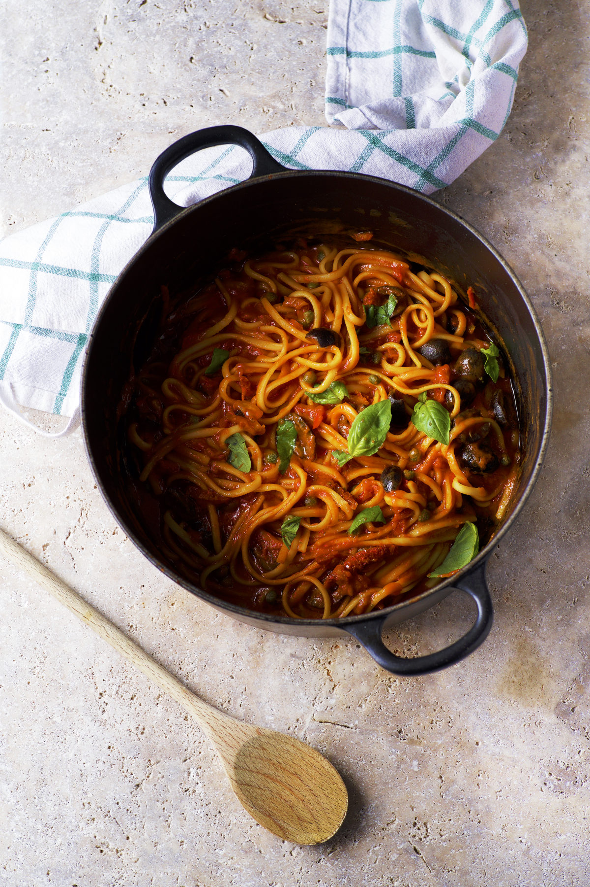

Vegane One Pot Pasta mit Oliven und Kapern

Hier für euch ein einfaches Rezept - perfekt für abends wenn man mal nicht so viel Zeit hat! Die Oliven und Kapern geben der Pasta eine super Note und begeistern einfach alle.
Für 2 Personen
ZUTATEN
- 200g Spaghetti
- 500g Tomatensoße (mit Zwiebeln und/oder Knoblauch)
- 1 Chilischote (rot)
- 6 getrocknete Tomaten (eingelegt aus dem Glas)
- 50 schwarze Oliven
- 1 EL Kapern
- 1 TL Zucker
- 2 EL Olivenöl
- Eine Handvoll frische Basilikumblätter
ZUBEREITUNG
- Die Spaghetti in einen großen Topf oder eine tiefe Pfanne geben (oder einmal durchbrechen, falls sie zu lang sind). Die Passata sowie 250 ml Wasser hinzugeben. Kurz aufkochen und dann bei kleiner Hitze köcheln lassen. Weiterrühren, während die Pasta weich wird, um sicherzustellen, dass sie nicht am anklebt.
- Die Chilischote entkernen und in feine Scheiben schneiden. Die getrockneten Tomaten abtropfen lassen und fein schneiden, die Oliven halbieren und die Kapern abtropfen lassen. Alle Zutaten zusammen mit Zucker und Olivenöl zur Pasta geben. Gut umrühren, abdecken und bei mittlerer Hitze 10-11 Minuten unter ständigem Rühren bei niedriger Hitze köcheln lassen.
- Die Basilikumblätter grob zupfen. Wenn die Pasta gar ist, Basilikum unterrühren, die Pasta mit Salz und schwarzem Pfeffer abschmecken und servieren.
Back to Main